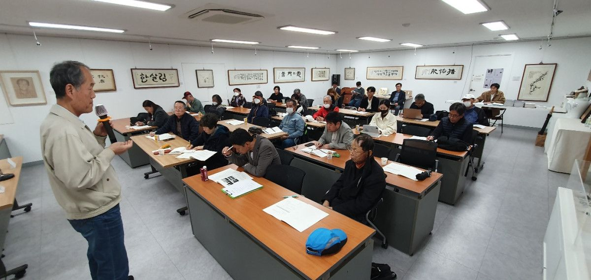
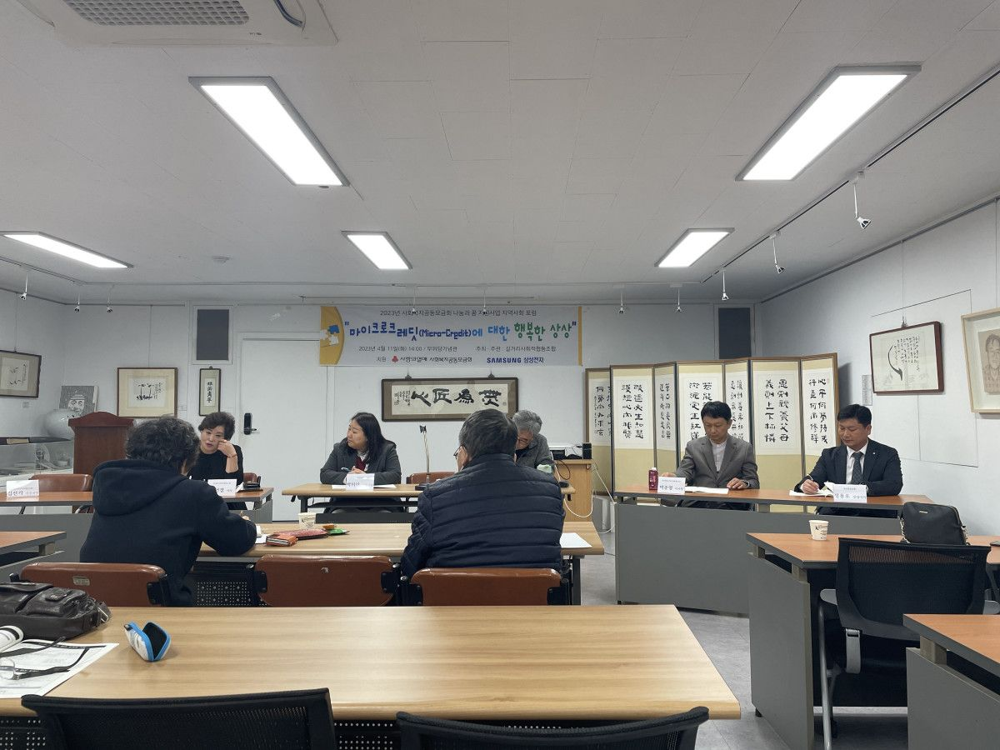

지난 4월 11일, 네트워크 사무국은 갈거리사회적협동조합에서 주최한 「마이크로크레딧에 대한 행복한 상상」포럼에 참석했습니다
첫번째 발표는 '서울 동자동 사랑방 마을 주민협동회'의 선동수 간사님이 해주셨습니다.
첫번째 발표는 '서울 동자동 사랑방 마을 주민협동회'의 선동수 간사님이 해주셨습니다.
동자동이라는 지역기반으로 소액대출 주민 협동회가 시작된 배경과 그동안의 과정, 활동사항을 소개해주셨습니다.
두번째 발표는 김선기 사무국장님의 '함께 일구는 복된 공동체의 여정, 갈거리은행'이라는 제목으로 갈거리은행 사업의 내용, 사업방향과 한계, 앞으로의 과제를 이야기해주셨습니다.
이어서 '협동조합형 마이크로크레딧의 발전방향'에 대해 갈거리사협 김언경이사님, 희망애찬 박미란 사무국장님, 네트워크 박준영 이사장님, 밝음신협에 정용호 상임이사님까지 4분의 토론자가 이야기해주셨는데요.
두번째 발표는 김선기 사무국장님의 '함께 일구는 복된 공동체의 여정, 갈거리은행'이라는 제목으로 갈거리은행 사업의 내용, 사업방향과 한계, 앞으로의 과제를 이야기해주셨습니다.
이어서 '협동조합형 마이크로크레딧의 발전방향'에 대해 갈거리사협 김언경이사님, 희망애찬 박미란 사무국장님, 네트워크 박준영 이사장님, 밝음신협에 정용호 상임이사님까지 4분의 토론자가 이야기해주셨는데요.
포럼에 관심있는 분들, 그리고 협동조합 조합원분들도 참석하셔서 끝까지 자리를 지켜주시는 모습에 감동받았습니다.

